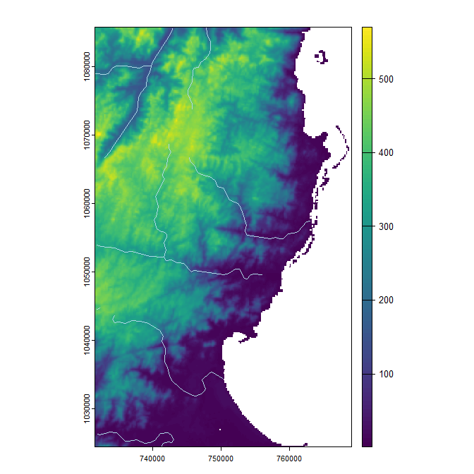
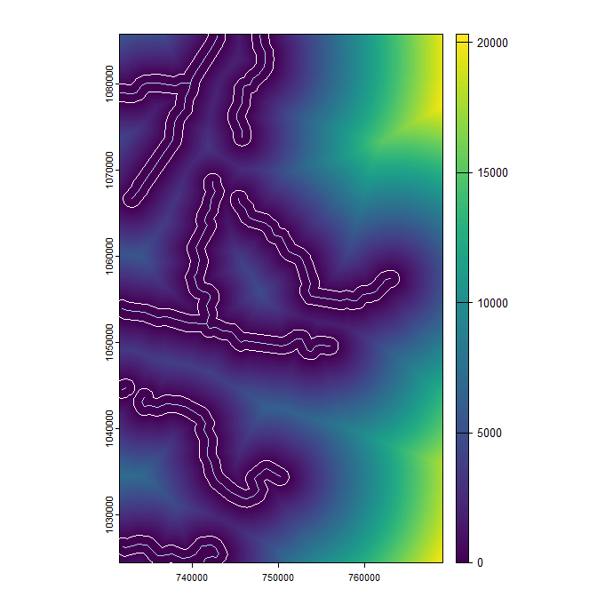

install.packages("fasterRaster")fasterRaster: Faster Raster Processing in R Using GRASS
R
rgrass
raster
intermediate
Learn how to use GRASS in R with the fasterRaster package

This tutorial introduces the fasterRaster package for R, which uses the GRASS engine for geospatial processing.
fasterRaster interfaces with GRASS to process rasters and spatial vector data. It is intended as an add-on to the terra and sf packages, and relies heavily upon them. For most rasters and vectors that are small or medium-sized in memory/disk, those packages will almost always be faster. They may also be faster for large objects. But when they aren’t, fasterRaster can step in.
Installing fasterRaster
You probably already have fasterRaster installed on your computer, but if not, start R and install the latest release version from CRAN using:
or the latest development version using:
remotes::install_github("adamlilith/fasterRaster", dependencies = TRUE)(You may need to install the remotes package first.)
Installing GRASS
fasterRaster uses GRASS to do its operations. On Windows you will need to install GRASS using the “stand-alone” installer, available through the GRASS. Be sure to use the “stand-alone” installer, not the “OSGeo4W” installer!
NoteWhat about GRASS addons?
A few functions in fasterRaster require GRASS addon tools, which do not come bundled with GRASS. You do not need to install these addons if you do not use functions that call them. A list of functions that require addons can be seen in the “addons” vignette (in R, use vignette("addons", package = "fasterRaster")). This vignette also explains how to install addons.
Starting a fasterRaster session
You should attach the data.table, terra, and sf packages before attaching fasterRaster package to avoid function conflicts. The data.table package is not required, but you most surely will use at least one of the other two.
library(terra)
library(sf)
library(data.table)
library(fasterRaster)To begin, you need to tell fasterRaster the full file path of the folder where GRASS is installed on your system. Where this is will depend on your operating system and the version of GRASS installed. Three examples below show you what this might look like, but you may need to change the file path to match your case:
grassDir <- "C:/Program Files/GRASS GIS 8.4" # Windows
grassDir <- "/Applications/GRASS-8.4.app/Contents/Resources" # Mac OS
grassDir <- "/usr/local/grass" # LinuxTo tell fasterRaster where GRASS is installed, use the faster() function:
faster(grassDir = grassDir)You can also use the faster() function to set options that affect how fasterRaster functions run. This includes setting the amount of maximum memory and number of computer cores allocated to operations.
Importing spatial objects into fasterRaster GRasters and GVectors
In fasterRaster, rasters are called GRasters and vectors are called GVectors. The easiest (but not always fastest) way to start using a GRaster or GVector is to convert it from one already in R. In the example below, we use a raster that comes with the fasterRaster package. The raster represents elevation of a portion of eastern Madagascar. We first load the SpatRaster using fastData(), a helper function for loading example data objects that comes with the fasterRaster package.
madElev <- fastData("madElev") # example SpatRaster
madElevclass : SpatRaster
dimensions : 1024, 626, 1 (nrow, ncol, nlyr)
resolution : 59.85157, 59.85157 (x, y)
extent : 731581.6, 769048.6, 1024437, 1085725 (xmin, xmax, ymin, ymax)
coord. ref. : Tananarive (Paris) / Laborde Grid
source : madElev.tif
name : madElev
min value : 1
max value : 570Now, we do the conversion to a GRaster and a GVector using fast(). This function can create a GRaster or GVector from a SpatRaster or a file representing a raster.
elev <- fast(madElev)
elevclass : GRaster
topology : 2D
dimensions : 1024, 626, NA, 1 (nrow, ncol, ndepth, nlyr)
resolution : 59.85157, 59.85157, NA (x, y, z)
extent : 731581.552, 769048.635, 1024437.272, 1085725.279 (xmin, xmax, ymin, ymax)
coord ref. : Tananarive (Paris) / Laborde Grid
name(s) : madElev
datatype : integer
min. value : 1
max. value : 570Converting rasters and vectors that are already in R to GRasters usually takes more time than loading them directly from disk. To load from disk, simply replace the first argument in fast() with a string representing the folder path and file name of the raster you want to load into the session. For example, you can do:
rastFile <- system.file("extdata", "madElev.tif", package = "fasterRaster")
elev2 <- fast(rastFile)Now, let’s create a GVector. The fast() function can take a SpatVector from the terra package, an sf object from the sf package, or a string representing the file path and file name of a vector file (e.g., a GeoPackage file or a shapefile).
madRivers <- fastData("madRivers") # sf vector
madRiversSimple feature collection with 11 features and 5 fields
Geometry type: LINESTRING
Dimension: XY
Bounding box: xmin: 731627.1 ymin: 1024541 xmax: 762990.1 ymax: 1085580
Projected CRS: Tananarive (Paris) / Laborde Grid
First 10 features:
F_CODE_DES HYC_DESCRI NAM ISO NAME_0 geometry
1180 River/Stream Perennial/Permanent MANANARA MDG Madagascar LINESTRING (739818.2 108005...
1185 River/Stream Perennial/Permanent MANANARA MDG Madagascar LINESTRING (739818.2 108005...
1197 River/Stream Perennial/Permanent UNK MDG Madagascar LINESTRING (747857.8 108558...
1216 River/Stream Perennial/Permanent UNK MDG Madagascar LINESTRING (739818.2 108005...
1248 River/Stream Perennial/Permanent UNK MDG Madagascar LINESTRING (762990.1 105737...
1256 River/Stream Perennial/Permanent UNK MDG Madagascar LINESTRING (742334.2 106858...
1257 River/Stream Perennial/Permanent UNK MDG Madagascar LINESTRING (731803.7 105391...
1264 River/Stream Perennial/Permanent UNK MDG Madagascar LINESTRING (755911.6 104957...
1300 River/Stream Perennial/Permanent UNK MDG Madagascar LINESTRING (731871 1044531,...
1312 River/Stream Perennial/Permanent UNK MDG Madagascar LINESTRING (750186.1 103441...rivers <- fast(madRivers)
riversclass : GVector
geometry : 2D lines
dimensions : 11, 11, 5 (geometries, sub-geometries, columns)
extent : 731627.0998, 762990.1321, 1024541.23477, 1085580.45359 (xmin, xmax, ymin, ymax)
coord ref. : Tananarive (Paris) / Laborde Grid
names : F_CODE_DES HYC_DESCRI NAM ISO NAME_0
type : <chr> <chr> <chr> <chr> <chr>
values : River/Stream Perennial/Perm~ MANANARA MDG Madagascar
River/Stream Perennial/Perm~ MANANARA MDG Madagascar
River/Stream Perennial/Perm~ UNK MDG Madagascar
(and 8 more rows) Operations on GRasters and GVectors
You can do operations on GRasters and GVectors as if they were SpatRasters, SpatVectors, and sf objects. For example, you plot them as if the were any other spatial object:
plot(elev)
plot(rivers, col = 'lightblue', add = TRUE)
You can use mathematical operators and functions:
elev_feet <- elev * 3.28084
elev_feetclass : GRaster
topology : 2D
dimensions : 1024, 626, NA, 1 (nrow, ncol, ndepth, nlyr)
resolution : 59.85157, 59.85157, NA (x, y, z)
extent : 731581.552, 769048.635, 1024437.272, 1085725.279 (xmin, xmax, ymin, ymax)
coord ref. : Tananarive (Paris) / Laborde Grid
name(s) : layer
datatype : double
min. value : 3.2808
max. value : 1870.056log10_elev <- log10(elev)
log10_elevclass : GRaster
topology : 2D
dimensions : 1024, 626, NA, 1 (nrow, ncol, ndepth, nlyr)
resolution : 59.85157, 59.85157, NA (x, y, z)
extent : 731581.552, 769048.635, 1024437.272, 1085725.279 (xmin, xmax, ymin, ymax)
coord ref. : Tananarive (Paris) / Laborde Grid
name(s) : log
datatype : double
min. value : 0
max. value : 2.75587485567249You can also use the many fasterRaster functions. In general, these functions have the same names as their terra counterparts and often the same arguments. Note that even many terra and fasterRaster functions have the same name, they do not necessarily produce the exact same output. Much care has been taken to ensure they do, but sometimes there are multiple ways to do the same task, so choices made by the authors of terra and GRASS can lead to differences.
The following code 1) creates a raster where cell values reflect the distance between them and the nearest river; 2) makes a buffer around the rivers; then 3) plots the output:
dist <- distance(elev, rivers)
distclass : GRaster
topology : 2D
dimensions : 1024, 626, NA, 1 (nrow, ncol, ndepth, nlyr)
resolution : 59.85157, 59.85157, NA (x, y, z)
extent : 731581.552, 769048.635, 1024437.272, 1085725.279 (xmin, xmax, ymin, ymax)
coord ref. : Tananarive (Paris) / Laborde Grid
name(s) : distance
datatype : double
min. value : 0
max. value : 21310.9411762729 river_buff <- buffer(rivers, 2000)
river_buffclass : GVector
geometry : 2D polygons
dimensions : 1, 5, 0 (geometries, sub-geometries, columns)
extent : 729629.19151, 764989.97343, 1022544.92079, 1087580.24979 (xmin, xmax, ymin, ymax)
coord ref. : Tananarive (Paris) / Laborde Grid plot(dist)
plot(rivers, col = 'lightblue', add = TRUE)
plot(river_buff, border = 'white', add = TRUE)
And that’s how you get started! Now that you have a raster and a vector in your fasterRaster “project”, you can start doing manipulations and analyses using any of the fasterRaster functions! To see an annotated list of these functions, use ?fasterRaster.
Converting and saving GRasters and GVectors
You can convert a GRaster to a SpatRaster raster using rast():
terra_elev <- rast(elev)To convert a GVector to the terra package’s SpatVector format or to an sf vector, use vect() or st_as_sf():
terra_rivers <- vect(rivers)
sf_rivers <- st_as_sf(rivers)Finally, you can use writeRaster() and writeVector() to save GRasters and GVectors directly to disk. This will always be faster than using rast(), vect(), or st_as_sf() then saving the result from those functions.
elev_temp_file <- tempfile(fileext = ".tif") # save as GeoTIFF
writeRaster(elev, elev_temp_file)
vect_temp_file <- tempfile(fileext = ".shp") # save as shapefile
writeVector(rivers, vect_temp_file)There are several ways to speed up fasterRaster functions. These are listed below in order of their most likely gains, with the first few being potentially the largest.
Making fasterRaster faster
Load rasters and vectors directly from disk: Use
fast()to load rasters and vectors directly from disk. Convertingterraorsfobjects toGRasters andGVectors can be slower. Why? Because if the object does not have a file to which theRobject points, usefast()has to save it to disk first as a GeoTIFF or GeoPackage file, then load it intoGRASS.Save
GRasters andGVectors directly to disk: ConvertingGRasters andGVectors toSpatRasters orSpatVectorusingrast()orvect(), then saving them is much slower than just saving them. Why? Because these functions save the file to disk, they then use the respective function from the respective package to connect to the file.Increase memory and the number of cores usable by GRASS: By default,
fasterRasteruses 2 cores and 2048 MB (2 GB) of memory forGRASSmodules that allow users to specify these values. You can set these to higher values usingfaster()and thus potentially speed up some calculations. Functions in newer versions ofGRASShave more capacity to use these options, so updatingGRASSto the latest version can help, too.Do operations on
GRasters andGVectors in the same coordinate reference system together: Every time you switch between using aGRasterorGVectorwith a different coordinate reference system (CRS),GRASShas to spend a few seconds changing to that CRS. You can save some time by doing as much work as possible with objects in one CRS, then switching to work on objects in another CRS.
Known issues
Comparability between terra and fasterRaster: As much as possible, fasterRaster functions were written to recreate the output that functions in terra produce. However, owing to implementation choices made by the respective developers of terra and GRASS, outputs are not always the same.
fasterRaster can crash when the temporary folder is cleaned: Some operating systems have automated procedures that clean out the system’s temporary folders when they get too large. This can remove files GRASS is using and fasterRaster is pointing to, rendering them broken. In Windows, this setting can be changed by going to
Settings, thenStorage, thenStorage Sense. Turn off the setting “Keep Windows running smoothly by automatically cleaning up temporary system and app files”.Disk space fills up: As counter to the previous issue, prolonged use of fasterRaster by the same R process can create a lot of temporary files in the GRASS cache that fills your hard drive. fasterRaster does its best to remove these files when they are not needed. However, temporary files can still accumulate. For example, the operation
new_raster <- 2 * old_raster^3creates a raster file with the^3operation, which is then multiplied by 2 to get the desired output. The raster from the^3operation is still left in the disk cache, even though it does not have a “name” in R. Judicious use of themow()function can remove these temporary files.